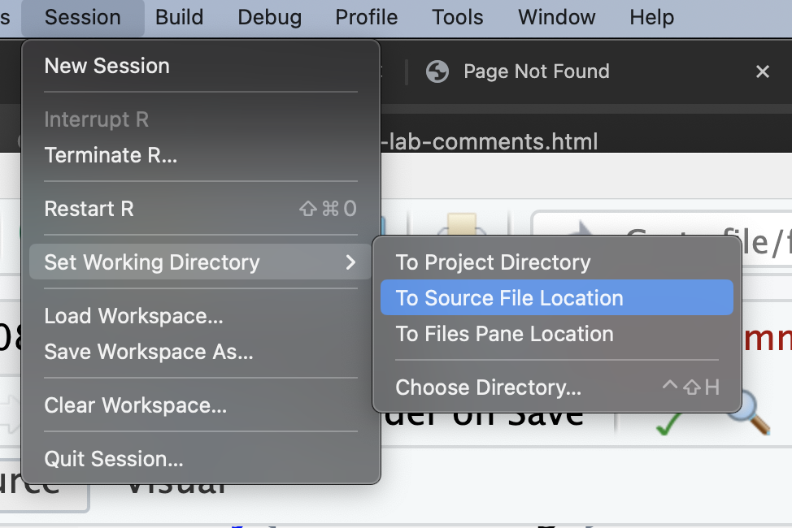
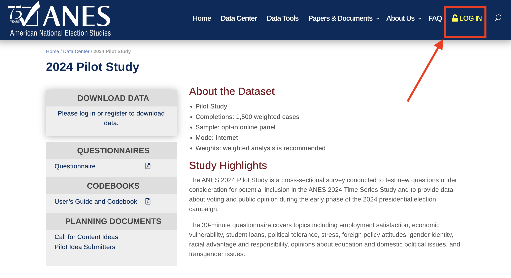
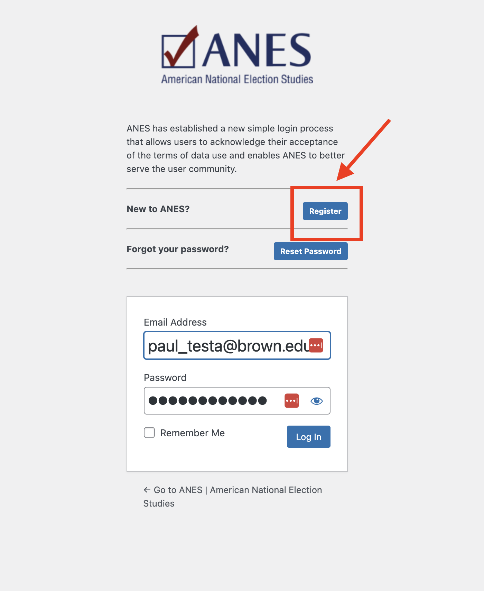
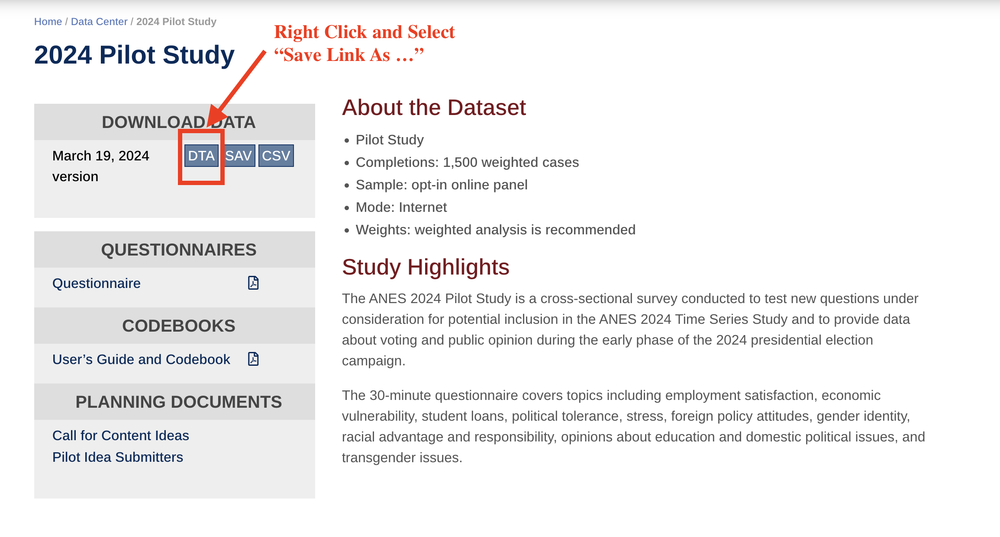
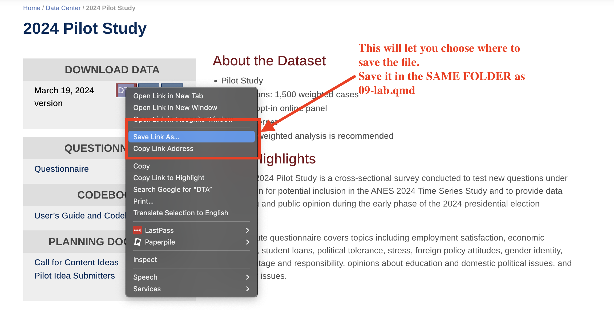
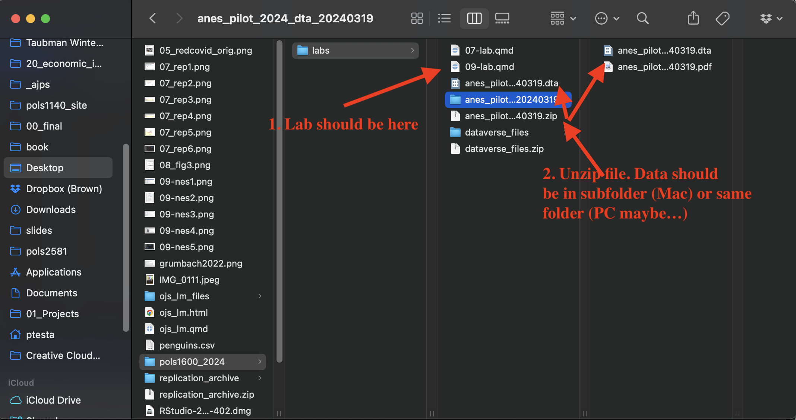

Lab 09 - Exploring data in the 2020 National Elections Study
Overview
In this lab, we’ll explore data from the National Election Studies 2024 Pilot Study. You find an outcome of interest and a variable you think predicts interesting variation in that outcome. You’ll figure out what recoding you need to do, do that recoding and describe the data. I’ll do the same, so can some template code to compare your work to.
Everything we’ll do today is something we’ve done before and is also something you’ll likely have to do a version of in your final project. Here’s the plan
Set up your work space (5 minutes)
Download and load data from the NES into R (10 minutes)
Explore the codebook for the 2024 Pilot Study (5-10 minutes)
Get a high level overview of the data to figure out what recoding needs to be done (5-10 minutes)
Recode the data (15 minutes)
Describe the data (15-20 minutes)
Formulate a set of research questions (10 minutes)
Save the data (5 minutes)
Finally, as always please take the class survey.
Goals
This week’s lab will give you practice:
Download and loading data from your own computers (Q1,Q2)
Exploring a codebook to find interesting relevant variables (Q3)
Exploring data to understand what needs to be recoded (Q4)
Recoding data in a clear and precise manner (Q5)
- Demonstrate how to recode multiple variables using
across()
- Demonstrate how to recode multiple variables using
Describing, summarizing, and exploring data through tables and figures (Q6)
- Using
kable()and functions from thekableExtrapackage to format tables - Combining multiple figures into single plots using
ggarrange()from the `ggpubrpacakge
- Using
Formulating research questions based on initial explorations of the data (Q7)
Saving data so you can use it later (Q8)
Workflow
Please render this .qmd file
As with every lab, you should:
- Download the file
- Save it in your course folder
- Update the
author:section of the YAML header to include the names of your group members in attendance. - Render the document
- Open the html file in your browser (Easier to read)
- Write your code in the chunks provided under each section
- Comment out or delete any test code you do not need
- Render the document again after completing a section or chunk (Error checking)
- Upload the final lab to Canvas.
1 Set up your workspace
In the code chunk below, please add code to load the package DeclareDesign
1.1 Load Packages
# Libraries
library(tidyverse)
library(haven)
library(labelled)
library(kableExtra)
library(ggpubr)
library(DeclareDesign)
## ADD DeclareDesign1.2 Set your working directory in R Studio
In R studio set your working directory to the folder where this lab is saved by clicking > Session > Set Working Directory > To Source File Location

After doing so uncomment getwd() Should print out something like
“~/Desktop/pols1600/labs/”
Depending on where your lab is saved
# In the Top Panel of RStudio Click
# Session > Set Working Directory > Source File Location
# Uncomment to Check Where Your File is Saved
# getwd()
Note
If getwd() says something like ‘~/Downloads/’ click: “File > Save As” and save this lab in your course folder. Then close the version 09-lab.qmd that was opened from your Downloads folder and open the version of 09-lab.qmd that now exists in your course folder.
2 Download and load the NES data into R
Please click here to go to the download page for the National Election Studies 2024 Pilot Study
- Click the Log-in Button

- Create an account with the NES

- Right click (Ctrl-click) on the DTA button. This will allow you to select
Save Link As...Which should in turn allow you to chose where the file is saved. Save it in the same folder as 09-lab.qmd
 
- Unzip
anes_pilot_2024_dta_20240319.zip.- On a Mac this creates a new folder called
anes_pilot_2024_dta_20240319in your course folder which contains the following files: anes_pilot_2024_dta_20240319.dtathe dataanes_pilot_2024_userguidecodebook_20240319.pdfthe codebook for the data- On a PC i think i it asks you where you want to unzip the files. Please unzip them directly into your course folder.
- On a Mac this creates a new folder called

- Load the data using some version of the following commands:
# # IF .dta file is in subfolder where lab is:
# df <- read_dta("~/anes_pilot_2024_dta_20240319/anes_pilot_2024_20240319.dta")
#
# # IF .dta file is in SAME folder as lab:
# df <- read_dta("anes_pilot_2024_20240319.dta")
#
# # IF nothing works, fear not, you can load the data from the web as a backup
# df <- read_dta(url("https://pols1600.paultesta.org/files/data/anes_pilot_2024_20240319.dta"))3 Explore the codebook
Please open the file anes_pilot_2024_userguidecodebook_20240319.pdf.
It should be in same folder as the data.
Use Control+F for keywords to quickly navigate through the codebook looking for questions and variables that interest you.
3.1 Identify a potential outcome of interest
In this and next week’s lab, I’ll be exploring factors that explain variation in the following outcome variables:
A measure
vchoice_rematch“Vote Trump or Biden in 2024”1= Donald Trump2= Joe Biden-7= No Answer-1= Inapplicable
And five measures of political participation in the 2020 campaign
mobil_talk“2020 campaign - Talk to others about candidates”mobil_online“2020 campaign - Participate in online rallies”mobil_rally“2020 campaign - Attend in person rallies”mobil_button“2020 campaign - Wear a button or campaign sticker”mobil_work“2020 campaign - Any other work to support candidates”1= Yes2= No-1= Inapplicable
Please find a variable that describes some outcome of interest to you and fill in the following
outcome_variable_nameQuestion topic- variable values
3.2 Identify at least one variable that might predict variation in your outcome.
From a quick skim, I’ve selected the following potential predictors, which I will recode below:
ageAgeeducEducationfaminc_newIncomeraceRacepid77 point party identification
Please find at least one more predictor which you think might explain variation in your outcome of interest and fill in the following
predictor_variable_nameQuestion topic- variable values
For example, perhaps you’re interested in differences by gender, or ideology, or social media use. See if you can find variables that measure these concepts.
You only needed to identify one, but you can choose to explore more if you want. Don’t choose 50, unless you really like recoding data.
4 Get a high level overview of the data
In this section, we’ll get practice quickly looking at variables to see what, if anything needs to be recoded.
I had you download the .dta instead of the .csv version of the data, because the .dta includes value labels for the data, which makes it easier to understand what a specific number corresponds to substantively.
4.1 Examine the distributions and values of your outcome variable
Please uncomment and run the code below
# # Vote Choice
# get_variable_labels(df$vchoice_rematch)
# get_value_labels(df$vchoice_rematch)
# table(df$vchoice_rematch,useNA = "ifany")
#
# # Acts of Participation
# # All variables start with mobil_ prefix
# df %>% select(starts_with("mobil")) %>% names()
#
# # Political Talk
# get_variable_labels(df$mobil_talk)
# get_value_labels(df$mobil_talk)
# table(df$mobil_talk,useNA = "ifany")
#
# # Save the names all variables related to acts of participation in 2020
# the_participation_vars <- df %>% select(starts_with("mobil")) %>% names()
# # Only keep the variables that measure participation and not survey timing
# the_participation_vars <- the_participation_vars[1:5]From quickly looking at my outcome variables, I know that I will want to:
- Recode
vchoice_rematchtodv_vote_trump2024which- equals 1 if
vchoice_rematch == 1 - equals 0 if
vchoice_rematch == 2 - equals
NAifvchoice_rematch < 0
- equals 1 if
- Recode variables that start with
mobil_*to variables that start withpolpart_*and:- equal 1 if
mobil_* == 1 - equal 0 if
mobil_* == 2 - equals
NAifmobil_*< 0`
- equal 1 if
- Create
dv_participation*which is the sum of respondents’ five responses to the recodedpolpart_*variables
4.2 Describe any recoding of your outcome variable
In the code chunk below, please repeat this process for the outcome variable you selected in the previous section:
# Get a HLO of your outcome variable- Recode
YOUR OUTCOME VARIABLE HEREtoNAME FOR RECODED VARIABLE- Describe what values need to be recoded in the new variable
4.3 Examine the distributions and values of your predictor variable
Now I’ll repeat this process for my potential predictor variables.
Please uncomment and run the code below
# # Age
# get_variable_labels(df$age)
# get_value_labels(df$age)
# summary(df$age)
#
#
# # Education
# get_variable_labels(df$educ)
# get_value_labels(df$educ)
# table(df$educ)
# summary(df$educ)
#
#
# # Income
# get_variable_labels(df$faminc_new)
# get_value_labels(df$faminc_new)
# table(df$faminc_new)
# summary(df$faminc_new)
#
#
# # Race
# get_variable_labels(df$race)
# get_value_labels(df$race)
# summary(df$race)
# table(df$race,useNA = "ifany")
#
#
# # Partisanship
# get_variable_labels(df$pid7)
# get_value_labels(df$pid7)
# summary(df$pid7)
# table(df$pid7)After taking a quick look at each variable, I know that I’ll want to do the following recoding:
agetoage1- recode
-9s toNA
- recode
educno recoding needed- create indicator
has_college_degreewhich equals1iseduc > 4and0otherwise
- create indicator
faminc_newtoincome- recode
-7and97toNA
- recode
racetorace_5catrace == 1 ~ "White"race == 2 ~ "Black"race == 3 ~ "Hispanic"race == 4 ~ "Asian"T ~ "Other"(Collapse other racial categories)
racetois_*binary indicators:is_white = 1ifrace==1,0otherwise
pid7topartyid- recode
pid7 == 8to4(ClassifyDon't Knowsas Independents)
- recode
pid7tois_*: binary indicators:is_dem = 1ifpartyid < 4, 0 otherwiseis_rep = 1ifpartyid > 4, 0 otherwiseis_ind = 1ifpartyid == 4, 0 otherwise
4.4 Describe any recoding of your predictor(s)
In the code chunk below, please repeat this process for the additional predictor(s) you selected in the previous section:
# Get a HLO of your outcome variable- Recode
YOUR OUTCOME VARIABLE HEREtoNAME FOR RECODED VARIABLE- Describe what values need to be recoded in the new variable
5 Recode the data
Now we’ve got a plan of action for how we need to recode the data.
5.1 Recode the outcome variables
Please uncomment and run the following code chunk:
# df %>%
# # Recode 2024 Vote Choice
# mutate(
# dv_vote_trump2024 = case_when(
# vchoice_rematch == 1 ~ 1,
# vchoice_rematch == 2 ~ 0,
# T ~ NA
# )
# ) %>%
# # Recode Individual Acts of Participation
# mutate(across(all_of(the_participation_vars),
# \(x) case_when(
# x == 1 ~ 1,
# x == 2 ~ 0,
# T ~ NA
# ),
# .names = "polpart_{.col}"
# )
#
# ) %>%
# # Create Additive Measure of Participation
# mutate(
# dv_participation = rowSums(
# select(.,starts_with("polpart")),
# na.rm = T)
#
# ) -> dfPlease recode your outcome of interest as needed
Remember to save the output of your recode back into the dataframe df
# Recode your outcome of interest5.2 Check the recoding of your outcome
It’s a good habit to compare your recoded variables to their original values, to make sure your code did what you thought it did.
Please uncomment and run the following:
# Check recodes
# table(
# recode = df$dv_vote_trump2024,
# original = df$vchoice_rematch,
# useNA = "ifany"
# )
#
# table(
# recode = df$polpart_mobil_button,
# original = df$mobil_button,
# useNA = "ifany"
# )
# table(
# total = df$dv_participation,
# item = df$polpart_mobil_button,
# useNA = "ifany"
# )So everything looks in order. I could have probably checked the dv_participation variable against all of its constituent items, but based off comparing it to polpart_mobil_button everything looks in order since: - there are no cases where polpart_mobil_button is 1 but dv_participation is 0 - there are no cases where dv_participation is at it’s max but polpart_mobil_button is 0. - dv_participation has the correct theoretical range from 0 acts to 5 acts.
Now do the same for your outcome variable.
Please check your recoded outcome against its original values
# Check recodes5.3 Recode your predictor variables
Again, I’ve provide some demonstration code to recode the predictors listed above.
Please uncomment and run the following
# df %>%
# mutate(
# # Age
# age = ifelse(age < 0, NA, age),
# # Education
# education = educ,
# educ_f = to_factor(educ), #Convert to Factor for Plotting
# is_college_grad = ifelse(educ > 4,1,0),
# # Income
# income = case_when(
# faminc_new < 0 ~ NA,
# faminc_new > 0 & faminc_new >16 ~ NA,
# T ~ faminc_new
# ),
# # Race
# race_5cat = case_when(
# race < 5 ~ to_factor(race),
# T ~ "Other"
# ) %>% factor(., levels = c("White","Black","Hispanic","Asian","Other")),
# is_white = ifelse(race == 1, 1, 0),
# is_black = ifelse(race == 2, 1, 0),
# is_hispanic = ifelse(race == 3, 1, 0),
# is_asian = ifelse(race == 4, 1, 0),
# is_other = ifelse(race == 5, 1, 0),
# # Partisanship
# partyid = case_when(
# pid7 == 8 ~ 4,
# T ~ pid7
# ),
# is_dem = ifelse(partyid < 4, 1, 0),
# is_rep = ifelse(partyid > 4, 1, 0),
# is_ind = ifelse(partyid == 4, 1, 0),
# ) -> dfPlease recode your additional predictor(s) as needed
# Recode your additional predictor(s)It’s a good habit to check your all your recoding – particularly if you’re doing something like summing over multiple columns – but for this lab, we’ll live dangerously.
6 Describe the Data
Now let’s get some practice summarizing our data, presenting these summaries as tables and figures, and interpreting our results
6.1 Create a table of summary statistics
Please uncomment and run the code below which demonstrates how to produce a nicely formatted table of summary statistics
# # Vector of numeric variables to summarize
# the_vars <- c(
# "dv_vote_trump2024",
# "dv_participation",
# "age","education","income",
# "is_white","is_black","is_hispanic","is_asian","is_other",
# "partyid","is_dem","is_rep","is_ind"
# )
#
# # Vector of nicely formatted labels for variables
# the_labels <- c(
# "Vote for Trump in '24",
# "Acts of Participation in `20",
# "Age","Education", "Income",
# "White", "Black","Hispanic","Asian","Other",
# "Party ID", "Democrat","Republican","Independent"
# )
#
# df_summary <- df %>%
# select(all_of(the_vars)) %>%
# rename_with(~the_labels) %>%
# pivot_longer(
# cols = everything(),
# names_to = "Variable"
# ) %>%
# mutate(
# Variable = factor(Variable, levels = the_labels)
# ) %>%
# group_by(Variable) %>%
# summarise(
# Min = min(value,na.rm = T),
# p25 = quantile(value, prob = .25,na.rm = T),
# Median = quantile(value, prob = .5,na.rm = T),
# Mean = mean(value, na.rm = T),
# p75 = quantile(value, prob = .75,na.rm = T),
# Max = max(value,na.rm = T),
# `N missing` = sum(is.na(value))
# )
#
# # Look at results
# df_summaryWe can then format df_summary as table using knitr() and styling options from the kableExtra package:
6.2 Modify the table to include your predictors
Using the two previous code chunks as a template, update the code so that the table includes your chosen outcome and predictors.
# Copy, paste, and update code from datasummary_me to include your variables6.3 Interpret the results of your table.
Please write a few sentences that provide a substantive interpretation of your table of descriptive statistics
Your reader should come away with an understanding of the characteristics of the respondents to this sample.
The National Election Study’s 2024 Pilot Study contains responses from 1909 individuals2. The typical respondent in the data was just under 50 years old, with some college, with an income in the range of $50k-$59k. Approximately two-thirds of the sample identified as white, with 13 percent of respondents identifying as Black, 13 percent as Hispanic, 2 percent as Asian. Forty-three percent of respondents identified as Democrats, 38 percent as Republicans, and 20 percent as Independents. The respondents were evenly split in who they would vote for 2024, with 50 percent saying they would Vote for Donald Trump, and 50 percent saying Joe Biden. In the 2020 campaign, the average respondent reported engaging in about 1 act of political participation.
6.4 Visualize the Data
Please a choose a variable or variables whose distribution or relationship you think may be substantively interesting to the potential story you want to tell.
In the code below, I visualize:
- the distribution of age by race using
geom_boxplot() - average partisanship by race using
stat_summary() - how partisanship changes with age by race using
geom_smooth()
And combine these 3 plots into a single figure using two calls to the ggarrange() function from the ggpubr package
# fig_age_race <- df %>%
# ggplot(aes(race_5cat,age,
# col = race_5cat))+
# geom_boxplot()+
# labs(
# x = "Race",
# y = "Age",
# col = "Race",
# title = "Distribution of Age by Race"
# )+
# theme_minimal()
#
# fig_pid_race <- df %>%
# ggplot(aes(race_5cat,partyid,
# col = race_5cat))+
# stat_summary(position = position_dodge(width=.5))+
# labs(
# x = "Race",
# y = "Partisanship",
# col = "Race",
# title = "Average Partisanship by Race"
# )+
# theme_minimal()
#
# fig_age_race_pid <- df %>%
# mutate(
# Race = race_5cat
# ) %>%
# ggplot(aes(age,partyid,
# col = race_5cat
# ))+
# geom_smooth(se = F) +
# geom_jitter(size=.5, alpha=.3) +
# labs(
# x = "age",
# y = "Partisanship",
# col = "Race",
# title = "Distribution of Partisanship by Age and Race"
# )+
# theme_minimal()
#
# fig_desc <- ggarrange(
# # Top Row, two columns
# ggarrange(
# fig_age_race, fig_pid_race,
# ncol =2,
# legend = "none"
# ),
# # Bottom row, 1 column
# fig_age_race_pid,
# nrow=2,
# common.legend = T,
# legend = "bottom",
# heights = c(1,1.5)
# )
#
# fig_descFrom the figure, we see that whites in sample have the highest median age (55 years) followed by Blacks (46 years). Hispanic and Asian respondents have the youngest median age of (40 years). Whites are also tend to lean more Republican in their partisanship than other racial minority groups. This is particularly true for older whites in the sample. Interestingly, average partisanship stays roughly constant with age for Asians and Hispanics, but older Black respondents are more likely to identify as Democrats than younger Blacks, whose partisan identification is more independent.
Please produce your own figure and provide a similar interpretation of what it conveys.
7 Formulate a research question
Please take a moment, formulate a research question you might ask of your data for next week’s lab
Here’s an example of some questions I might ask of these data
Research Question: Age, Race, and Support For Trump
Broadly, I’m interested in how support for Trump in the 2024 election varies with age and race. On average, I expect that older voters will be more supportive of Trump, but suspect that this trend varies by race. I expect it will be particularly true among White voters, but less so among People of color. Finally, I wonder whether these specific relationships hold, once we control for variations in partisan identification which we know varies both by age and race.
Research Question: Education, Income, and Political Participation
What’s the relationship between income, education, and political?3 Past research suggests both are associated with higher rates of political participation. But I wish to know whether the effects of one varies conditional on the levels of the other. Are income education complements, amplifying each others’ association with participation? Or are they possibly substitutes, such that increases in education for the low income might reduce gaps in rates of participation compared to higher income individuals?
8 Save your data
Finally, save your data so you can load all the work you’ve done today and hit the ground running, next lab.
# save(df, file = "nes24.rda")Take the Class Survey
Please take a few moments to complete the class survey for this week.){target=“_blank”} for this week.
Footnotes
In general, I try not to recode the original variables, but instead create new columns, with different names. But, like this footnote, it seems overly verbose to create something like
age_recoded, so I’ll break my general rule↩︎See note below↩︎
In general, I’m often ambivalent on this kind of “What’s the effect of x on y” phrasing. I think it’s fine for framing, but the real question I’m interested in is something about the interaction and relative effects of income and education on participation, hence the subsequent clarification of research question.↩︎